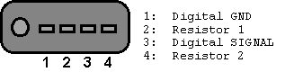

NOTE: This is a copy of the original in the Internet Archive. It is duplicated here for convenience and posterity.
This is the digital interface on Sony MD players as I have seen it on my MZ-R3. It is not complete yet, so I appreciate any input that helps me to complete the list. Please let me know if you try to use this interface.
The connector is described in the figure. Pin 2 and 4 are used to control the player by connecting various resistors between the pins. The exact values are described elsewhere. This document is about pin 1 and 3, which carries digital data to the LCD display sitting on the headphone cable. This information includes track number, time and trackname.

The electrical interface is described in the figure. The data packet starts with a "reset" pulse. Then a start bit follows (allways "0"). Then the 8 bit data and address follows (LSB first). The packet is terminated with a stop bit ("0" or "1"). I have not yet found out why this bit sometimes is a "1", and other times is a "0" It may be some kind of parity, but I don't know. Each bit is defined as follows:
The logic levels seemes to be quite near 0V for a low signal, and 2.9V for a high signal. This means that the levels are TTL compatible, and that the codes can be read by a device like the PC printer port, or allmost any microcontroller.
Till now, I have found the following registers and functions. I would appreciate any feedback if you find something that is wrong, if you understand more about how things works, or if you find out something new. I have used the following conventions for the data format:
| Address | b7-6 | b5-4 | b3-0 | Data | Description |
| 0x2B | 00 | 10 | 1011 | N/A - 0x02 | ? |
| 0x40 | 01 | 00 | 0000 | N/A | This command is used when PLAY button is pressed |
| 0x41 | 01 | 00 | 0001 | Byte (0-23) | Headphone volume |
| 0x45 | 01 | 00 | 0101 | Ascii character | Text 2 |
| 0x46 | 01 | 00 | 0110 | 0x20 | |
| 0x47 | 01 | 00 | 0111 | N/A | Scroll text one pixel to left |
| 0x49 | 01 | 00 | 1001 | BCD number | Minutes |
| 0x4B | 01 | 00 | 1011 | BCD number | Seconds |
| 0x4C | 01 | 00 | 1100 | Ascii character | Text 1: The first character of a line is written to this regitser |
| 0x4D | 01 | 00 | 1101 | Ascii character | Text 2: The remaining characters of a line is written to this register. (Or to 0x45) |
| 0x68 | 01 | 10 | 1000 | 1
2 3 4 5 |
LOW BATT
NO DISC BLANKDISC DISC ERR HOLD |
| 0x69 | 01 | 10 | 1001 | N/A | Display is turned on (Used to blink during pause) |
| 0x6B | 01 | 10 | 1011 | N/A | Display is turned off (Used to blink during pause) |
| 0x7B | 01 | 11 | 1011 | N/A - 67 | ? |
| 0xA0 | 10 | 10 | 0000 | BCD number | The track number is continously written here when the player is stopped |
| 0xA1 | 10 | 10 | 0001 | BCD number | The track number is continously written here when playing |
| 0xA2 | 10 | 10 | 0010 | BCD number | The track number is written her once when starting to play |
| 0xA3 | 10 | 10 | 0011 | N/A | Continously written during PAUSE |
| 0xA4 | 10 | 10 | 0100 | ||
| 0xC0 | 11 | 00 | 0000 | N/A | No Battery, No Repeat |
| 0xC1 | 11 | 00 | 0001 | N/A | Battery Empty, No Repeat |
| 0xC2 | 11 | 00 | 0010 | N/A | Battery almost Empty, No Repeat |
| 0xC3 | 11 | 00 | 0011 | N/A | Battery 1/4 Full, No Repeat |
| 0xC4 | 11 | 00 | 0100 | N/A | Battery 1/2 Full, No Repeat |
| 0xC5 | 11 | 00 | 0101 | N/A | Battery 3/4 Full, No Repeat |
| 0xC6 | 11 | 00 | 0110 | N/A | Battery Full, No Repeat |
| 0xD0 | 11 | 01 | 0000 | N/A | No Battery, Repeat |
| 0xD1 | 11 | 01 | 0001 | N/A | Battery Empty, Repeat |
| 0xD2 | 11 | 01 | 0010 | N/A | Battery almost Empty, Repeat |
| 0xD3 | 11 | 01 | 0011 | N/A | Battery 1/4 Full, Repeat |
| 0xD4 | 11 | 01 | 0100 | N/A | Battery 1/2 Full, Repeat |
| 0xD5 | 11 | 01 | 0101 | N/A | Battery 3/4 Full, Repeat |
| 0xD6 | 11 | 01 | 0110 | N/A | Battery Full, Repeat |
| 0xE0 | 11 | 10 | 0000 | N/A | No Battery, Repeat1 |
| 0xE1 | 11 | 10 | 0001 | N/A | Battery Empty, Repeat1 |
| 0xE2 | 11 | 10 | 0010 | N/A | Battery almost Empty, Repeat1 |
| 0xE3 | 11 | 10 | 0011 | N/A | Battery 1/4 Full, Repeat1 |
| 0xE4 | 11 | 10 | 0100 | N/A | Battery 1/2 Full, Repeat1 |
| 0xE5 | 11 | 10 | 0101 | N/A | Battery 3/4 Full, Repeat1 |
| 0xE6 | 11 | 10 | 0110 | N/A | Battery Full, Repeat1 |
| 0xF0 | 11 | 11 | 0000 | N/A | No Battery, Repeat Shufle |
| 0xF1 | 11 | 11 | 0001 | N/A | Battery Empty, Repeat Shufle |
| 0xF2 | 11 | 11 | 0010 | N/A | Battery almost Empty, Repeat Shufle |
| 0xF0 | 11 | 11 | 0011 | N/A | Battery 1/4 Full, Repeat Shufle |
| 0xF4 | 11 | 11 | 0100 | N/A | Battery 1/2 Full, Repeat Shufle |
| 0xF5 | 11 | 11 | 0101 | N/A | Battery 3/4 Full, Repeat Shufle |
| 0xF6 | 11 | 11 | 0110 | N/A | Battery Full, Repeat Shufle |
| 0xF5 | 11 | 11 | 0101 | N/A | No Battery, Repeat Shufle |
I have found this information by connecting the output signal frm the MD directly to one input pin on the PC printer port. One idea would be to use a microprocessor to decode the information. Matthew Richardson has done it by using a couple of standard logic components to make a shift register. Click here to se the schematic.
This list is by no way complete. If you have any additions or comments, pleas mail to: htoerrin@online.no. I will include any additions to this list.
Visitors:
Disclaimer:
I can not take any responsibility for anything that happens to anyone or anything. Not even if it has any connection to this information.
{kind=link}